1. Pendahuluan
1.1 Tujuan Aplikasi
KasirKu POS adalah aplikasi Point of Sale yang kami siapkan untuk membantu toko mengelola katalog produk, kategori, stok, transaksi penjualan, pengguna kasir, dan laporan. Aplikasi ini dibangun dengan Laravel dan menggunakan autentikasi session web. Nama aplikasi menggunakan KasirKu, sedangkan identitas menu menampilkan deskripsi Point of Sale.
1.2 Tujuan Manual Book
Manual book ini kami susun untuk menjelaskan fungsi aplikasi, role pengguna, hak akses, menu, alur kerja, input yang dibutuhkan, hasil yang diharapkan, validasi, error umum, serta screenshot halaman website. Dokumen ini ditujukan sebagai panduan operasional bagi admin, kasir, dan tim teknis yang melakukan pendampingan implementasi.
1.3 Target Pengguna
- Administrator toko, yaitu pengguna yang mengelola master data, stok, user, transaksi, dan laporan.
- Kasir, yaitu pengguna yang memproses transaksi penjualan harian.
- Tim teknis atau support, yaitu tim yang menyiapkan server, database, akun demo, dan proses generate dokumen.
1.4 Lingkungan Aplikasi
| Komponen | Keterangan |
|---|---|
| Framework | Laravel 12, PHP 8.3 |
| Autentikasi | Laravel session guard web menggunakan model App\Models\User |
| UI | Blade, Tailwind CSS, DaisyUI, Alpine.js, Chart.js |
| URL lokal dokumentasi | http://127.0.0.1:8000 |
| Package permission | Tidak ditemukan paket seperti spatie/laravel-permission. Hak akses diatur oleh kolom role dan middleware custom RoleMiddleware. |
2. Ringkasan Role dan Hak Akses
Aplikasi menggunakan dua role utama, yaitu admin dan kasir. Role disimpan pada kolom users.role dengan nilai default kasir. Status aktif pengguna disimpan pada kolom users.is_active. Middleware role hanya menerima role admin dan kasir; role lain dianggap tidak valid dan menghasilkan error 403.
| Role | Deskripsi | Hak Akses Utama | Menu yang Bisa Diakses |
|---|---|---|---|
| admin | Pengguna pengelola aplikasi dan operasional toko. | Mengakses dashboard admin, mengelola kategori, produk, stok, user/kasir, melihat semua transaksi, melihat laporan penjualan, export CSV penjualan, melihat laporan stok, dan mengakses fitur transaksi kasir. | Dashboard, Produk, Kategori, Stok, User/Kasir, Transaksi, Laporan Penjualan, Laporan Stok. Admin juga diizinkan masuk ke route kasir untuk membuat transaksi. |
| kasir | Pengguna operasional yang melayani transaksi penjualan. | Mengakses dashboard kasir, membuat transaksi baru, mencari produk aktif, melihat struk transaksi milik sendiri, dan membuka PDF struk transaksi milik sendiri. | Dashboard dan Transaksi Baru. |
2.1 Akun Demo dari Seeder
| Role | Password | Status | |
|---|---|---|---|
| Admin | admin@kasirku.com |
password |
Tersedia pada UserSeeder, aktif. |
| Kasir | kasir@kasirku.com |
password |
Tersedia pada UserSeeder, aktif. |
2.2 Aturan Akses Route
| Prefix / Route | Middleware | Role | Keterangan |
|---|---|---|---|
/admin/* |
auth, role:admin |
admin | Semua fitur administrasi. |
/kasir/* |
auth, role:admin,kasir |
admin, kasir | Dashboard kasir, transaksi baru, struk, PDF struk, dan API pencarian produk. |
/profile |
auth |
admin, kasir | Edit profil pengguna yang sedang login. |
/login |
guest |
Belum login | Form login aplikasi. |
3. Panduan Login dan Logout
3.1 Cara Membuka Aplikasi
- Pastikan server Laravel berjalan di
http://127.0.0.1:8000. - Buka browser dan akses
http://127.0.0.1:8000. - Jika belum login, aplikasi otomatis mengarahkan pengguna ke halaman
/login.
3.2 Cara Login
- Masukkan email akun pada field Email.
- Masukkan password pada field Password.
- Opsional: centang Ingat saya agar session login disimpan lebih lama.
- Klik tombol Masuk.
- Jika role adalah
admin, pengguna diarahkan ke dashboard admin. Jika role adalahkasir, pengguna diarahkan ke dashboard kasir.
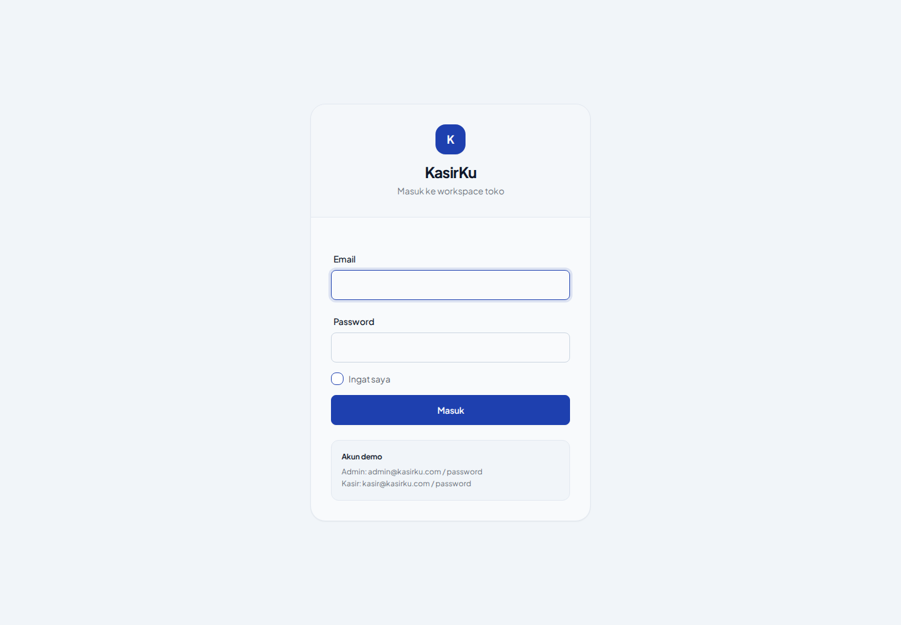
3.3 Validasi Login
- Email wajib diisi dan harus berformat email.
- Password wajib diisi.
- Jika kombinasi email dan password salah, aplikasi menampilkan pesan Email atau password salah.
- Jika akun dinonaktifkan, aplikasi menampilkan pesan Akun Anda dinonaktifkan. Hubungi admin.
- Login dibatasi rate limiter. Setelah terlalu banyak percobaan gagal, pengguna perlu menunggu sesuai pesan throttle Laravel.
3.4 Cara Logout
- Lihat area profil pada sidebar bagian bawah.
- Klik tombol Keluar.
- Aplikasi menjalankan route
POST /logoutdan mengakhiri session pengguna.
4. Penjelasan Dashboard
4.1 Dashboard Admin
Dashboard admin menampilkan ringkasan operasional toko. Data yang ditampilkan berasal dari transaksi completed, produk aktif, stok, dan laporan penjualan. Controller menghitung ringkasan penjualan hari ini, tren tujuh hari terakhir, jumlah produk aktif, jumlah produk yang stoknya menipis, transaksi terbaru, dan stok kritis.
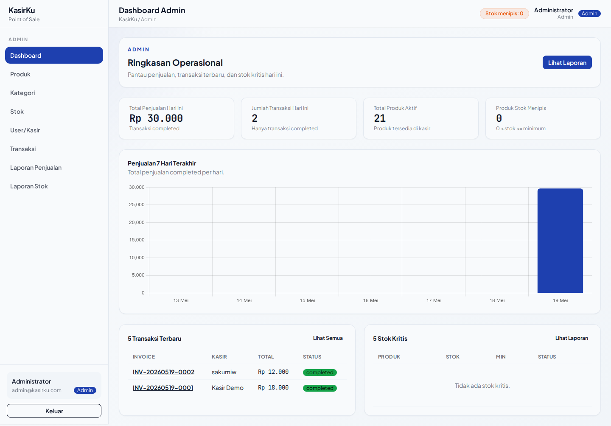
4.2 Dashboard Kasir
Dashboard kasir berfokus pada aktivitas pengguna yang sedang login. Data yang ditampilkan mencakup ringkasan penjualan hari ini untuk kasir tersebut dan transaksi completed terbaru milik kasir tersebut.
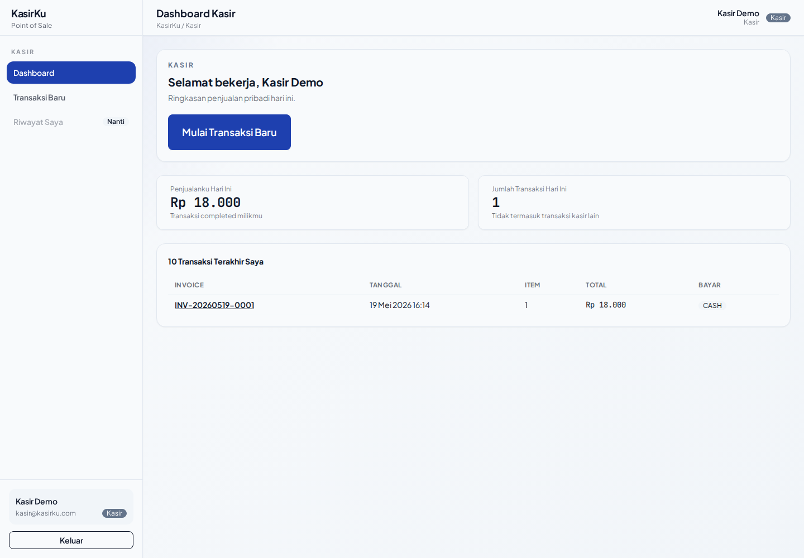
5. Penjelasan Fitur per Role
5.1 Role Admin
Admin memiliki akses paling luas pada aplikasi. Admin mengelola master data, melakukan penyesuaian stok, memantau transaksi, dan membaca laporan. Admin juga dapat mengakses route kasir karena middleware kasir menerima role admin dan kasir.
| Fitur | Langkah Umum Penggunaan |
|---|---|
| Dashboard Admin | Login sebagai admin, buka menu Dashboard, pantau ringkasan penjualan, produk aktif, stok menipis, transaksi terbaru, dan stok kritis. |
| Produk | Buka menu Produk, gunakan filter pencarian/kategori/status, tambah produk, edit produk, ubah status aktif/nonaktif, atau hapus soft delete. |
| Kategori | Buka menu Kategori, cari kategori, tambah kategori, edit kategori, atau hapus kategori yang belum digunakan produk. |
| Stok | Buka menu Stok, filter status aman/menipis/habis, klik Sesuaikan untuk stok masuk, stok keluar, atau adjustment, lalu lihat riwayat pergerakan. |
| User/Kasir | Buka menu User/Kasir, tambah akun, edit data akun, ubah role, dan aktifkan/nonaktifkan akun dengan perlindungan minimal satu admin aktif. |
| Transaksi | Buka menu Transaksi, filter tanggal, kasir, metode pembayaran, status, atau invoice, lalu buka detail transaksi. |
| Laporan | Buka Laporan Penjualan atau Laporan Stok, atur filter, lihat ringkasan, tren, daftar data, dan export CSV penjualan jika dibutuhkan. |
5.2 Role Kasir
Kasir menjalankan transaksi penjualan. Kasir dapat melihat dashboard kasir, membuat transaksi baru, mencari produk aktif, dan melihat struk transaksi miliknya sendiri. Untuk menjaga keamanan data, aplikasi menolak akses kasir ke struk transaksi milik pengguna lain.
| Fitur | Langkah Umum Penggunaan |
|---|---|
| Dashboard Kasir | Login sebagai kasir, buka Dashboard, lihat ringkasan penjualan hari ini dan transaksi terbaru milik sendiri. |
| Transaksi Baru | Buka menu Transaksi Baru, cari produk, klik produk untuk memasukkan ke keranjang, atur jumlah, diskon, metode bayar, uang diterima, dan proses transaksi. |
| Struk Transaksi | Setelah transaksi sukses, aplikasi mengarahkan ke halaman struk. Kasir dapat membuka tampilan PDF struk melalui route PDF transaksi. |
6. Penjelasan Fitur Utama
6.1 Pengelolaan Produk
Tujuan: Mengelola katalog produk yang tampil di halaman kasir.
Role yang dapat mengakses: Admin.
Route utama: /admin/products, /admin/products/create, /admin/products/{product}/edit, /admin/products/{product}/toggle.
Langkah penggunaan:
- Buka menu Produk.
- Gunakan filter nama/kode, kategori, atau status jika diperlukan.
- Klik Tambah Produk untuk membuat produk baru.
- Isi kategori, kode, nama, harga, harga modal, gambar opsional, status aktif, stok awal, dan stok minimal.
- Simpan data. Sistem membuat produk, data stok, dan pergerakan stok awal jika stok awal lebih dari nol.
Input: kategori opsional, kode produk, nama, deskripsi opsional, harga, harga modal opsional, gambar jpg/jpeg/png/webp maksimum 2048 KB, status aktif, stok awal, stok minimal.
Output: produk tersimpan, stok awal dibuat, dan produk aktif dapat dicari pada halaman transaksi kasir.
Validasi: kode unik, nama wajib maksimal 150 karakter, harga tidak boleh negatif, stok awal dan stok minimal wajib integer minimal 0.
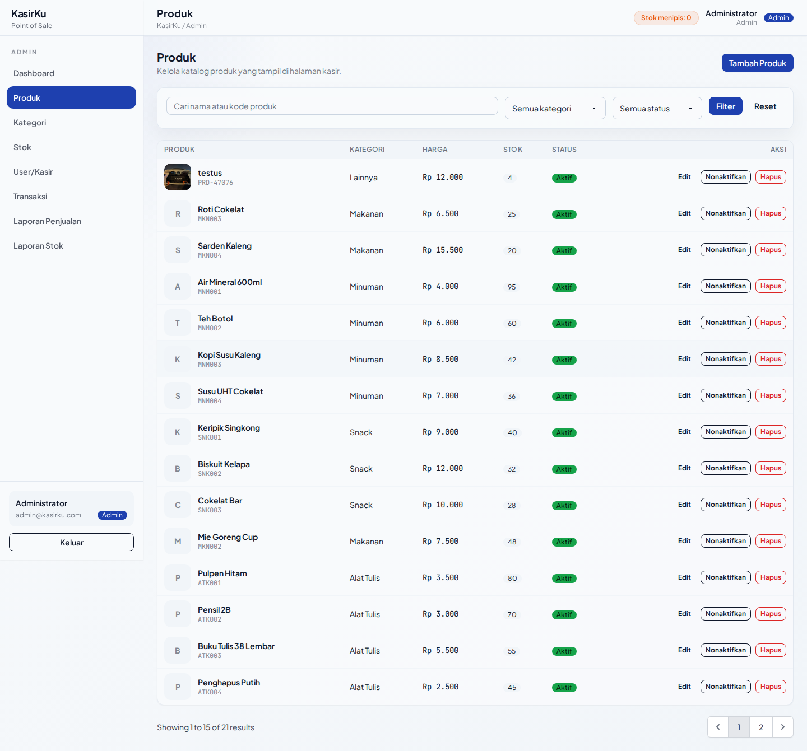
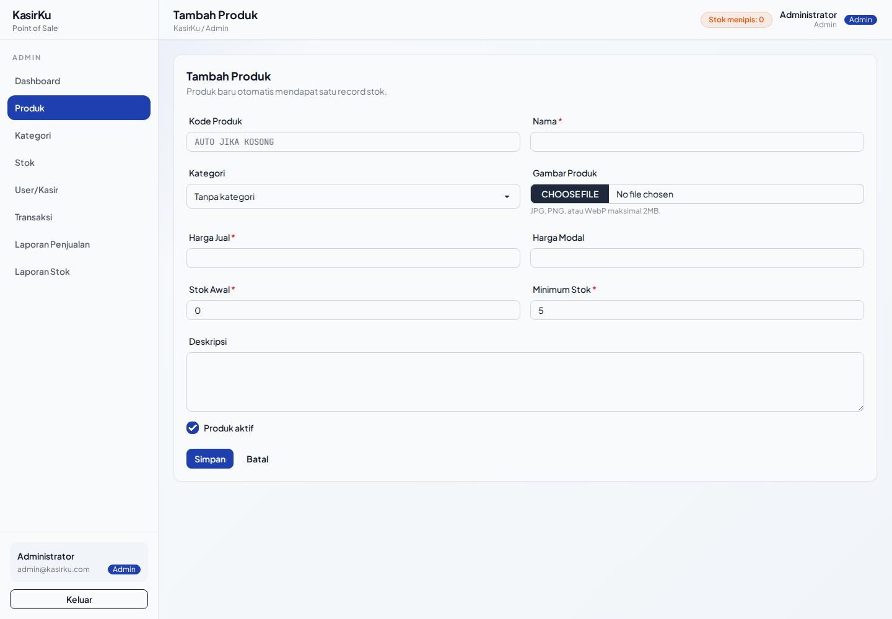
6.2 Pengelolaan Kategori
Tujuan: Mengelompokkan produk agar katalog mudah difilter dan dibaca.
Role yang dapat mengakses: Admin.
Route utama: /admin/categories, /admin/categories/create, /admin/categories/{category}/edit.
Langkah penggunaan:
- Buka menu Kategori.
- Cari kategori jika daftar sudah panjang.
- Klik Tambah Kategori, isi nama dan deskripsi, lalu simpan.
- Edit kategori jika ada perubahan nama atau deskripsi.
- Hapus kategori hanya jika kategori belum digunakan oleh produk, termasuk produk soft deleted.
Input: nama kategori wajib dan deskripsi opsional.
Output: kategori tersedia untuk dipilih pada form produk.
Validasi: nama kategori wajib, maksimal 100 karakter, dan unik.
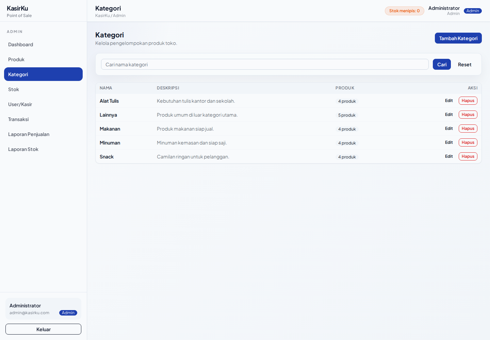
6.3 Pengelolaan Stok
Tujuan: Memantau jumlah stok, batas minimum stok, dan riwayat pergerakan stok produk.
Role yang dapat mengakses: Admin.
Route utama: /admin/stocks, /admin/stocks/movements, /admin/stocks/{stock}/adjust.
Langkah penggunaan:
- Buka menu Stok.
- Gunakan filter nama/kode produk atau status aman, menipis, dan habis.
- Klik Sesuaikan pada produk yang ingin diubah stoknya.
- Pilih tipe pergerakan: stok masuk, stok keluar, atau adjustment.
- Isi jumlah, catatan, dan reference jika diperlukan, lalu simpan.
- Buka Riwayat Pergerakan untuk melihat audit perubahan stok.
Input: tipe in, out, atau adjustment; quantity; notes opsional; reference opsional.
Output: quantity stok berubah dan riwayat tersimpan pada stock_movements.
Validasi: stok masuk dan keluar wajib quantity minimal 1, stok keluar tidak boleh melebihi stok saat ini, dan adjustment tidak boleh sama dengan stok saat ini.
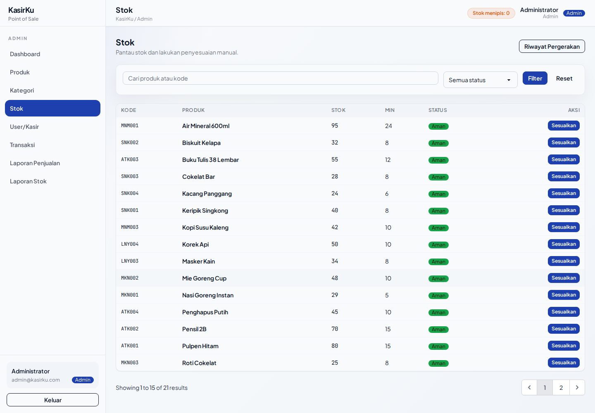
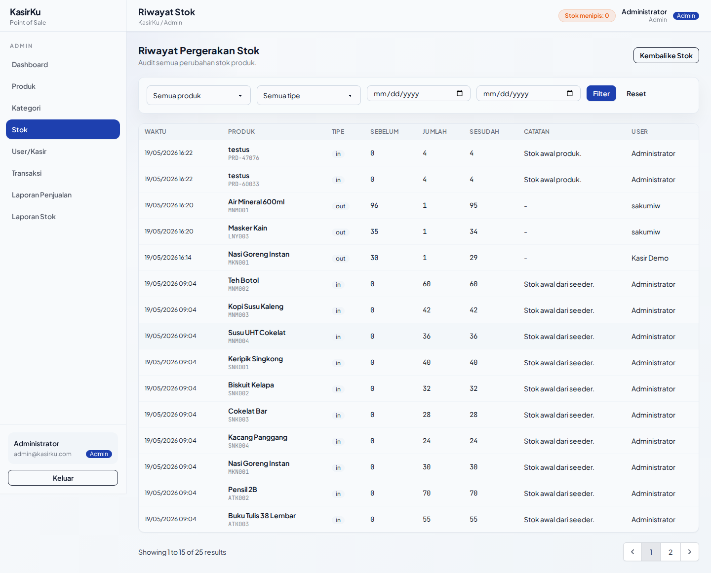
6.4 Pengelolaan User/Kasir
Tujuan: Mengelola akun pengguna yang dapat login ke aplikasi.
Role yang dapat mengakses: Admin.
Route utama: /admin/users, /admin/users/create, /admin/users/{user}/edit, /admin/users/{user}/toggle.
Langkah penggunaan:
- Buka menu User/Kasir.
- Filter daftar berdasarkan nama/email, role, atau status.
- Klik Tambah User untuk membuat akun baru.
- Isi nama, email, password, role, dan status aktif.
- Edit akun jika perlu mengubah data, role, status, atau password.
- Gunakan toggle status untuk mengaktifkan atau menonaktifkan akun.
Input: nama, email, password, role admin atau kasir, status aktif.
Output: akun dapat digunakan untuk login jika status aktif.
Validasi: email wajib unik, password minimal 8 karakter, role hanya admin atau kasir. Sistem mencegah perubahan yang menyebabkan tidak ada admin aktif tersisa.
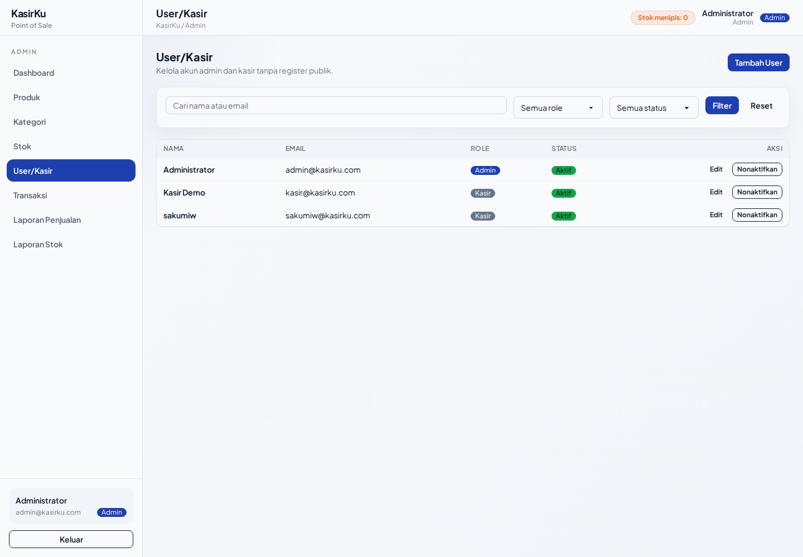
6.5 Transaksi Kasir
Tujuan: Memproses penjualan produk dan mencatat transaksi completed.
Role yang dapat mengakses: Admin dan kasir.
Route utama: /kasir/transactions/create, /kasir/transactions, /kasir/api/products/search, /kasir/transactions/{transaction}/receipt, /kasir/transactions/{transaction}/receipt/pdf.
Langkah penggunaan:
- Buka menu Transaksi Baru.
- Cari produk berdasarkan nama atau kode. Sistem hanya menampilkan produk aktif dan mengurutkan produk yang masih memiliki stok di atas produk habis.
- Klik produk untuk memasukkan ke keranjang.
- Atur quantity dengan tombol tambah/kurang. Quantity tidak dapat melebihi stok tersedia pada antarmuka.
- Isi diskon jika ada, pilih metode bayar cash, transfer, atau QRIS.
- Untuk cash, isi uang diterima. Untuk transfer dan QRIS, pembayaran dianggap pas sesuai total transaksi.
- Klik Proses Transaksi. Server menghitung ulang subtotal, diskon, pajak, total, pembayaran, dan stok.
- Jika sukses, aplikasi mengarahkan ke halaman struk.
Input: item produk dan quantity, discount type opsional, discount value opsional, payment method, amount paid untuk cash, catatan opsional.
Output: transaksi completed, item transaksi snapshot, nomor invoice format INV-YYYYMMDD-0001, stok produk berkurang, dan struk tersedia.
Validasi: keranjang minimal satu produk, produk wajib aktif, produk wajib memiliki stok, stok harus mencukupi, diskon tidak boleh melebihi subtotal, metode pembayaran harus cash/transfer/QRIS, uang cash tidak boleh kurang dari total transaksi.
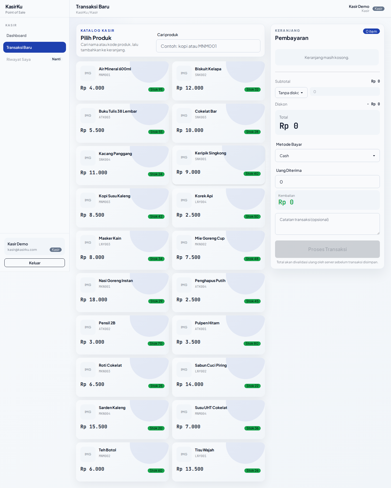
6.6 Monitoring Transaksi Admin
Tujuan: Melihat dan menelusuri transaksi seluruh kasir.
Role yang dapat mengakses: Admin.
Route utama: /admin/transactions, /admin/transactions/{transaction}.
Langkah penggunaan:
- Buka menu Transaksi.
- Gunakan filter tanggal awal, tanggal akhir, kasir, metode pembayaran, status, atau nomor invoice.
- Klik nomor invoice untuk membuka detail transaksi.
Input filter: tanggal, kasir, payment method cash, transfer, qris, status completed atau cancelled, dan pencarian invoice.
Output: daftar transaksi dengan informasi kasir, jumlah item, nominal, metode bayar, status, dan detail item.
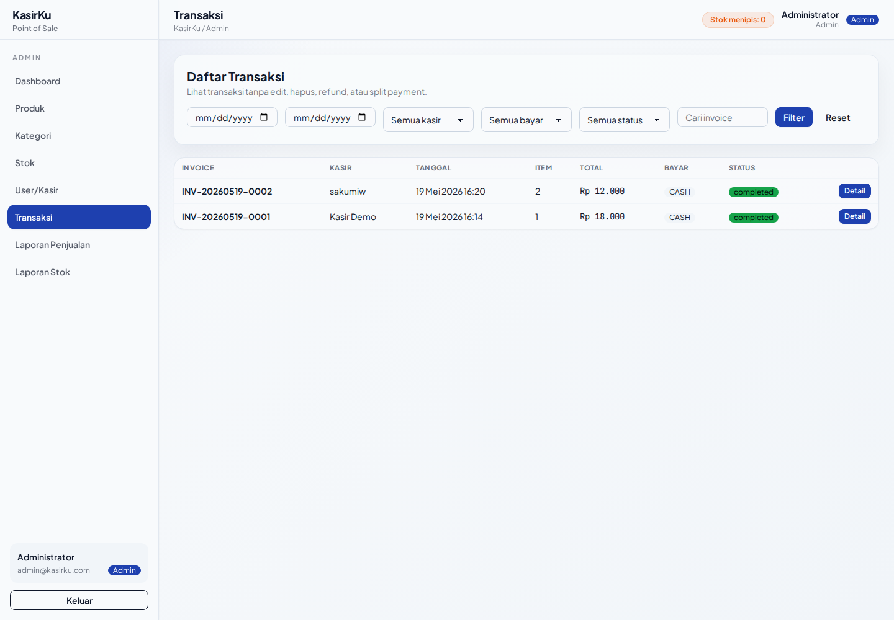
6.7 Laporan Penjualan
Tujuan: Membantu admin membaca performa penjualan dan mengekspor data transaksi completed.
Role yang dapat mengakses: Admin.
Route utama: /admin/reports/sales, /admin/reports/sales/export.
Langkah penggunaan:
- Buka menu Laporan Penjualan.
- Atur tanggal awal, tanggal akhir, kasir, dan metode pembayaran.
- Klik Terapkan untuk melihat ringkasan.
- Lihat total revenue, total transaksi, rata-rata transaksi, total diskon, estimasi profit, tren harian, dan tabel transaksi.
- Klik Export CSV untuk mengunduh data sesuai filter.
Output: ringkasan laporan, grafik tren, daftar transaksi, dan CSV export.
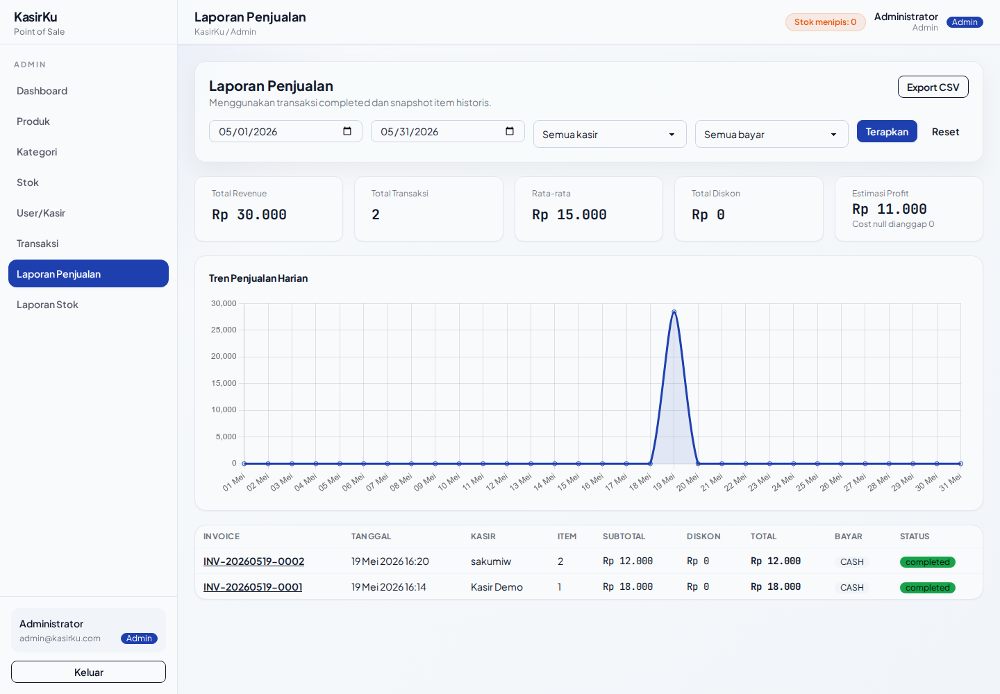
6.8 Laporan Stok
Tujuan: Menyajikan kondisi stok produk untuk pengambilan keputusan restock.
Role yang dapat mengakses: Admin.
Route utama: /admin/reports/stocks.
Langkah penggunaan:
- Buka menu Laporan Stok.
- Pilih filter semua, aman, menipis, atau habis.
- Baca ringkasan stok dan daftar produk sesuai status.
Output: ringkasan stok dan daftar produk yang memiliki record stok.
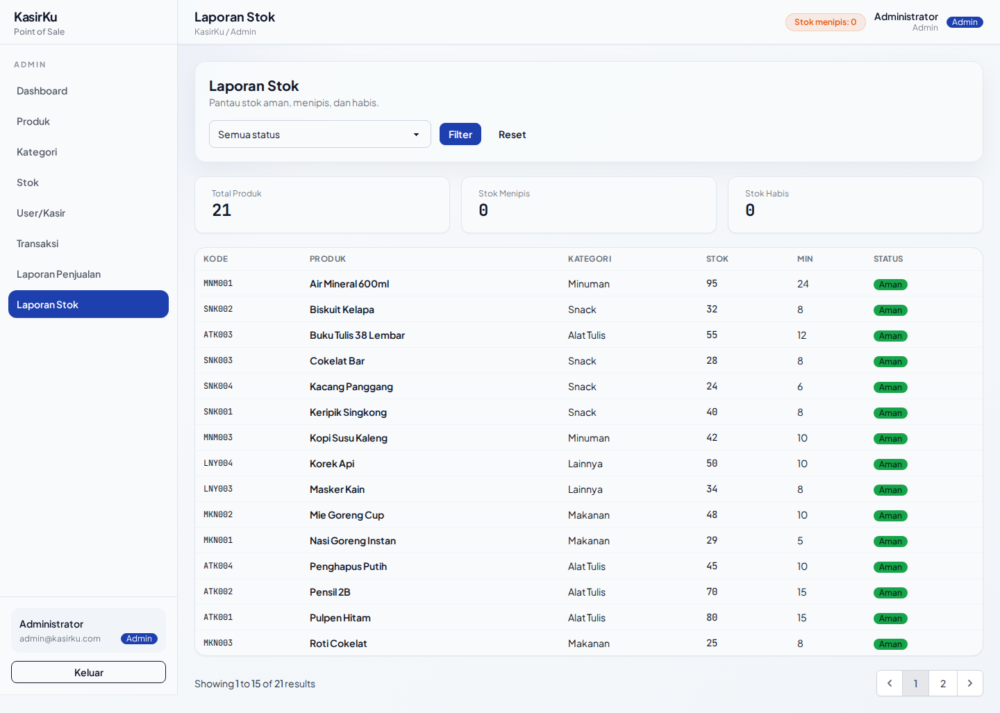
7. Data Master dan Struktur Data
Bagian ini merangkum struktur data penting yang kami gunakan pada model dan migration aplikasi.
| Entitas | Kolom/Fungsi Penting | Relasi |
|---|---|---|
| User | name, email, password, role, is_active. Method isAdmin() dan isKasir(). |
Memiliki banyak transaksi dan stock movement. |
| Category | name unik dan description. | Memiliki banyak produk. |
| Product | category_id, code unik, name, description, price, cost_price, image, is_active, soft delete. | Belongs to category, memiliki satu stock, banyak stock movement, dan banyak transaction item. |
| Stock | product_id unik, quantity, min_quantity. | Belongs to product. |
| StockMovement | product_id, user_id, type, quantity, before_quantity, after_quantity, notes, reference. | Belongs to product dengan trashed product, belongs to user. |
| Transaction | user_id, invoice_number unik, subtotal, discount, tax, total, payment_method, amount_paid, change_amount, status, notes. | Belongs to user dan memiliki banyak transaction item. |
| TransactionItem | transaction_id, product_id nullable, snapshot product_name, product_code, price, cost_price, quantity, subtotal. | Belongs to transaction dan product. |
7.1 Data Seeder
UserSeedermembuat akun admin dan kasir demo.CategorySeedermembuat kategori Makanan, Minuman, Snack, Alat Tulis, dan Lainnya.ProductSeedermembuat 20 produk demo lengkap dengan harga, harga modal, stok awal, stok minimal, dan stock movement awal dengan referenceSEED-INITIAL.